Escola de música em Viamão, RS
Toda idade tem uma música para começar.
Descubra seu potencial musical em uma aula experimental grátis, sem experiência prévia necessária. Vagas limitadas para este mês.
Mais de 1000 alunos já descobriram seu talento musical conosco. Você será o próximo!
- 12cursos
- 3formatos
- +250alunos
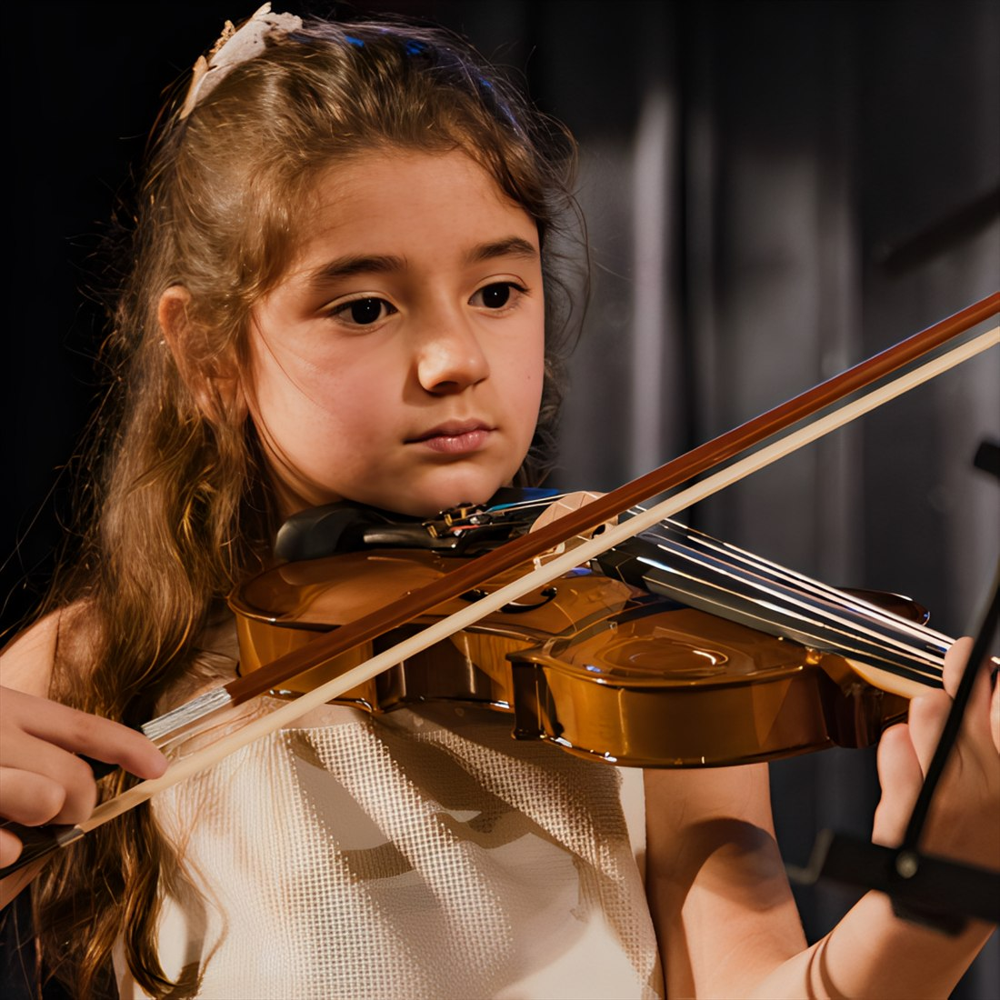
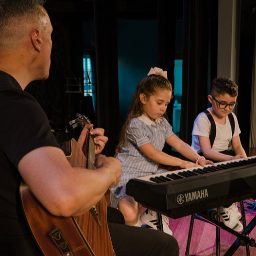
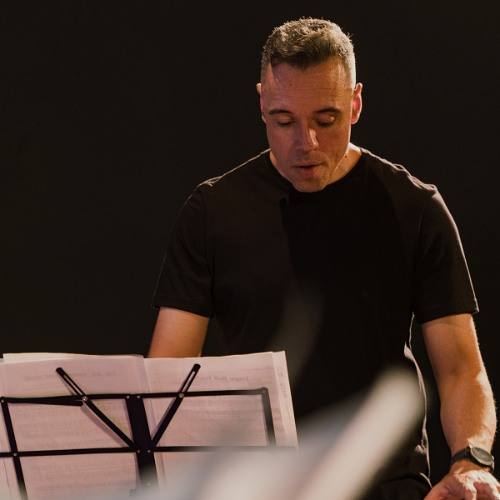
01Quem somos
Uma escola onde ninguém começa sozinho
A primeira aula não cobra talento de ninguém. Cobra vontade.
Recebemos quem nunca encostou em um instrumento e quem já toca há anos, e montamos o caminho de cada aluno a partir de onde ele realmente está.
O ensino é sério e a rotina é leve. Cada aluno tem atenção individual, na aula particular ou dentro da turma, e o repertório é escolhido junto, porque a música que a pessoa gosta é o que sustenta a prática de casa.
Ao longo do ano, quem quiser sobe no palco. As apresentações e o Festival Da Capo Musical existem para isso: transformar meses de estudo em uma noite que a família não esquece.
- Aulas personalizadas
- Turmas e aulas individuais e online
- Metodologia lúdica e envolvente
- Comunidade musical engajada
02Nossos cursos
Doze caminhos para entrar na música
Escolha o instrumento ou venha conversar, que a gente ajuda a escolher. Todos os cursos recebem iniciantes, em aulas presenciais no Centro de Viamão.
Violão
Guitarra- Contrabaixo
Ukulele- Teclado
- Piano
- Bateria
- Saxofone
Violino
Violoncelo- Canto
- Musicalização
03Por que escolher a DaCapo Musical
3 coisas que a gente leva a sério
-
01
Um método que se ajusta a quem chega
A abordagem é lúdica e envolvente, e muda de forma conforme a idade. A criança aprende brincando com o som muito antes de aprender a ler uma partitura. O adulto começa pela música que ele quer tocar. Para auxiliar, temos nosso material didático exclusivo, que conduzirá você por todo o curso.
-
02
Atenção individual, sempre
A escola foi pensada para ser um lugar afetuoso e inspirador. Aqui, cada aluno realiza seu sonho de tocar e cantar recebendo atenção individualizada e é encorajado a explorar o próprio potencial em um ambiente seguro e motivador.
-
03
Mais do que técnica
Ao lado do estudo do instrumento crescem a criatividade, a confiança e o trabalho em equipe. A prática de conjunto ensina a escutar o outro. Ter a experiência de subir no palco ensina e instiga a dominar e explorar sentimentos novos. Aqui não formamos apenas alunos, mas pessoas capazes de ir muito além das barreiras.
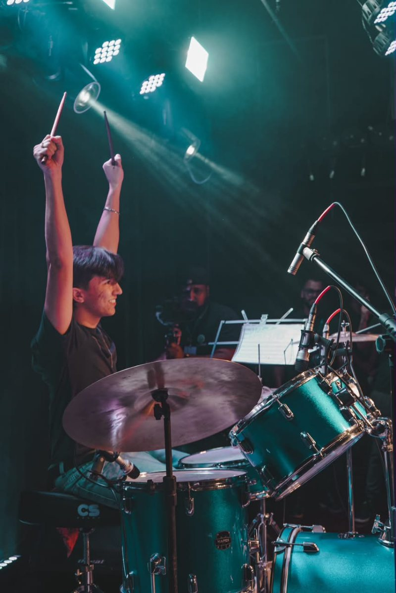
04Material didático
Guia exclusivo: seu caminho personalizado para aprender música
A Metodologia Da Capo é dividida por idade e nível. Criada por nossos colaboradores com 20+ anos de experiência.
Com esse material, você acompanha todo o seu desenvolvimento e a sua progressão de forma didática.
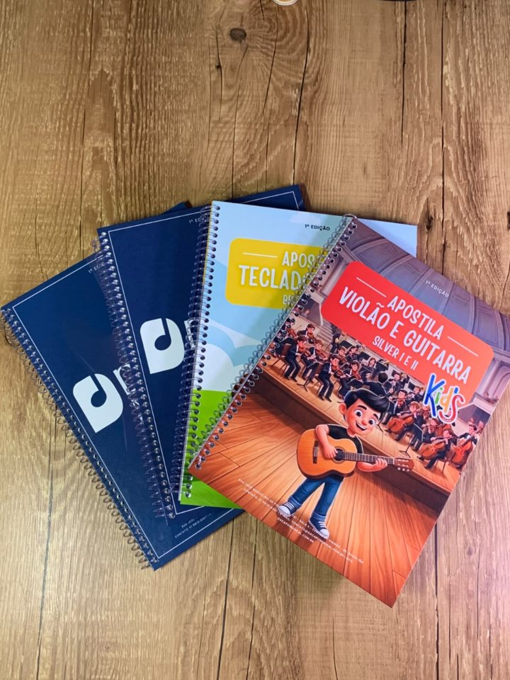
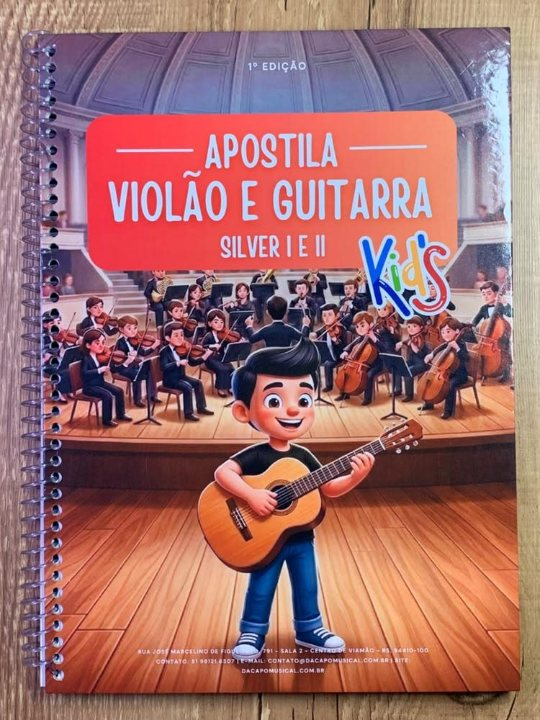
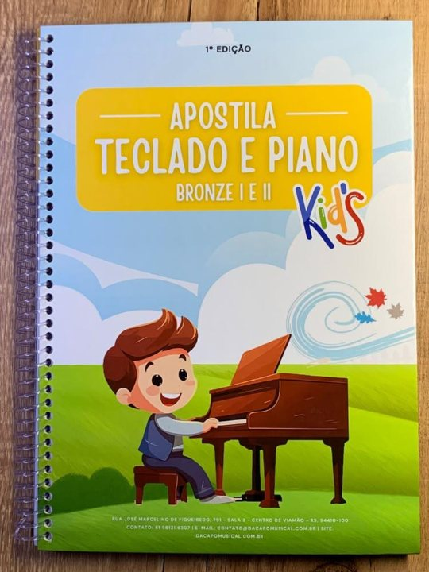
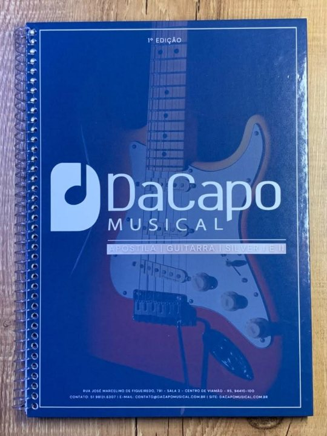
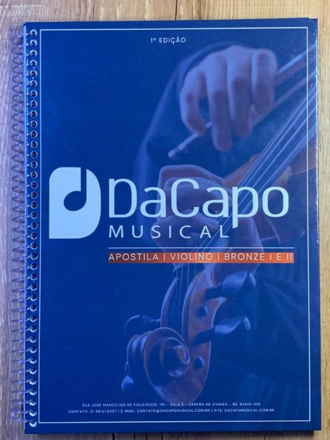
05No palco
O estudo vira apresentação
Todo ano os alunos da Da Capo sobem no palco. O Festival Da Capo Musical é o ponto alto, com duas sessões no Anfiteatro da Faculdade Cesi, em Viamão, reunindo alunos de todas as idades e de todos os instrumentos.
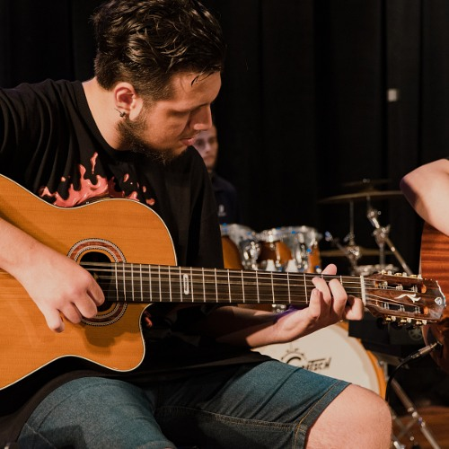
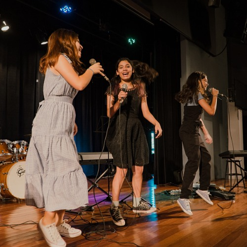
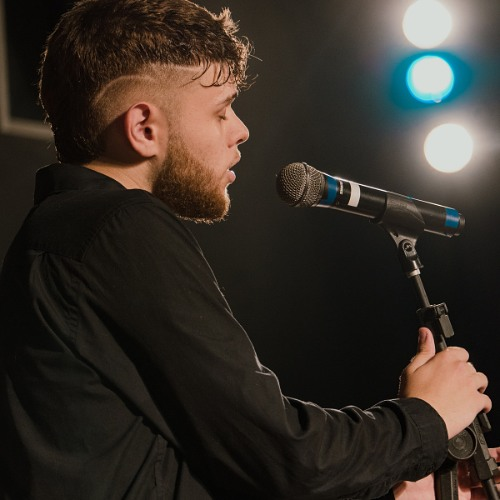
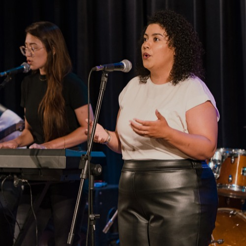
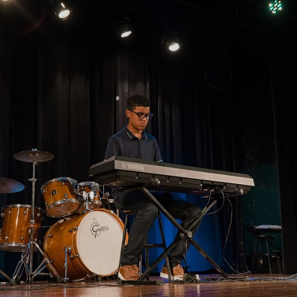
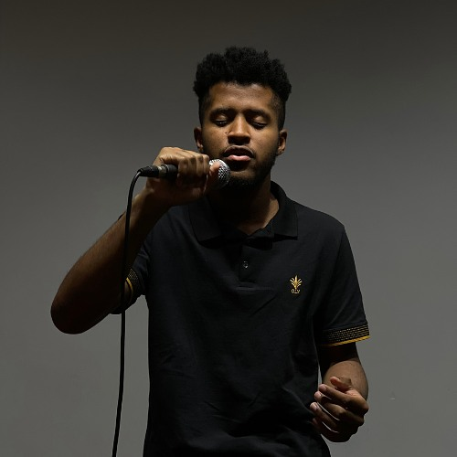
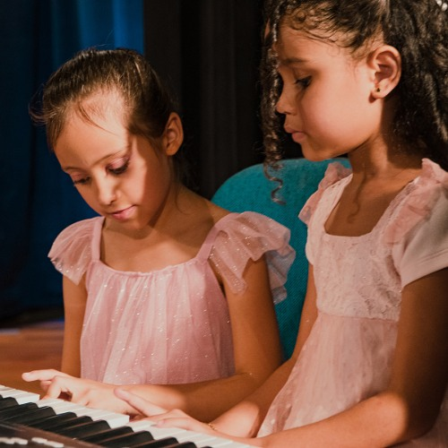
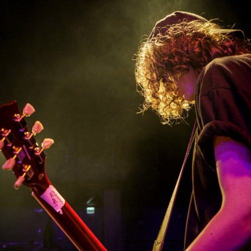
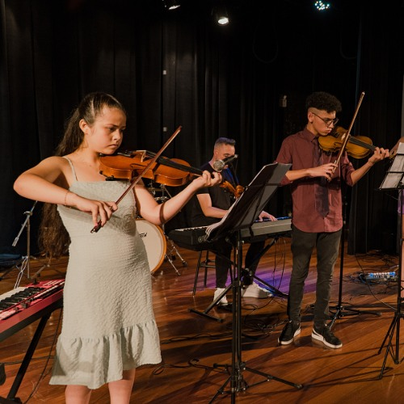
06Parceiros
Instituições que confiam no nosso trabalho
Escolas e empreendimentos de Viamão e região que abriram as portas para o nosso trabalho de educação musical.
Quer levar música para a sua escola ou empreendimento? Fale com a gente sobre parceria.
07Depoimentos
Quem estuda aqui conta melhor
Ótimo atendimento e professores maravilhosos. A escola de música é um local muito agradável.
Só tenho a agradecer à Da Capo Musical e ao Maestro Eliezer. Por toda a dedicação, posso ver os frutos do crescimento na minha menina, que está há pouco mais de um ano fazendo parte deste lindo trabalho.
Faço aulas há 2 anos e simplesmente é o melhor professor. Está de parabéns pelo atendimento, pela paciência e pelo profissionalismo com os alunos. Super recomendo, e os valores são muito acessíveis.
08Dúvidas frequentes
As perguntas que mais chegam no WhatsApp
Para a aula experimental, não. Fale com a gente pelo WhatsApp que orientamos o que é necessário para cada instrumento e em que momento vale a pena comprar o seu, sem pressa e sem exagero.
A escola atende da musicalização infantil ao aluno adulto e da terceira idade. Não existe idade para começar, existe o formato certo para cada fase. Fale com a gente e indicamos o caminho.
Dá, e é o começo mais comum aqui. Todos os cursos atendem iniciantes, e o professor parte de onde você está, não de onde você imagina que deveria estar.
As duas coisas. A turma dá convivência e prática de tocar junto. A aula individual dá ritmo próprio e foco. A escolha é feita com você depois da aula experimental.
Só se ele quiser. As apresentações e o Festival Da Capo Musical são abertos a quem se sentir pronto. Ninguém é obrigado a subir no palco, e ninguém fica de fora quando quer subir.
Os valores variam conforme o instrumento e o formato da aula, em turma ou individual. Informamos tudo no primeiro contato pelo WhatsApp, sem compromisso.
Na Rua José Marcelino de Figueiredo, 791, Sala 2, Centro, Viamão, RS, CEP 94410-110. Estamos no Centro, com acesso fácil de ônibus e de carro.
09Instagram
O dia a dia da escola por dentro
Aulas, ensaios, bastidores e as apresentações no palco. É no Instagram que a Da Capo mostra o que acontece entre uma aula e outra — e é o jeito mais rápido de sentir o clima da escola antes de vir conhecer.
@escolademusicaviamao10Contato
Vamos combinar sua primeira aula
Preencha os campos e a mensagem abre pronta no WhatsApp. Se preferir, use qualquer um dos canais ao lado.